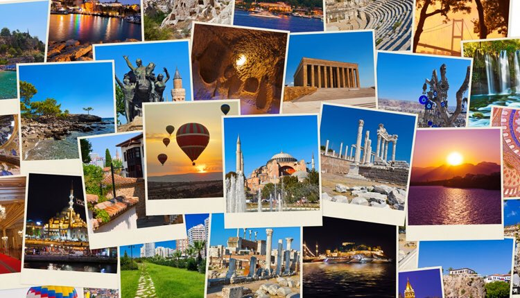

Muş
Muş, tarih ve doğanın buluştuğu, keşfedilmeyi bekleyen zengin bir Anadolu rotasıdır.
Muş için Öne Çıkan Noktalar
Muş, kendine has kültürü, doğal güzellikleri ve lezzetleriyle Türkiye'nin dikkat çeken şehirlerinden biridir. Bu rehberde, ziyaretçiler için seçilmiş önemli yerler ve tatmanız gereken yöresel lezzetler yer alıyor.
Gezilecek Yerler

Şehir Merkezi
Şehrin canlı merkezinde yer alan çarşılar, kafeler ve sokaklar; yerel yaşamı hissetmek için ideal.
Tarihi Mekanlar
Kentteki eski mahalleler, anıtlar ve tarihi yapılar; geçmişle bugünü bir arada sunan rotalar.
Doğal Güzellikler
Yeşil vadiler, göller ve yürüyüş parkurları; şehir sınırları içindeki doğal kaçamaklar.
Müze ve Kültür
Şehrin geçmişini anlatan müzeler, sanat galerileri ve kültür merkezleri; keşif için güçlü duraklar.
Yerel Pazarlar
Taze ürünler, hediyelik eşyalar ve yöresel lezzetlerle dolu canlı pazarlar; şehir deneyimini tamamlar.
Meşhur Lezzetler
Yöresel Kebap
Şehrin en bilinen et yemeği; baharatlı, lezzetli ve her ziyaretçinin tatması gereken bir özel tarif.
Yerel Tatlı
Yöresel tatlı çeşidi; şehrin kendine özgü malzemeleri ve sunumuyla farklı bir lezzet sunar.
Geleneksel Çorba
Bölgesel malzemelerle hazırlanan çorba; serin akşamlarda içinizi ısıtan bir gelenek.
Hamur İşi
Kahvaltıdan akşam yemeğine kadar tercih edilen yerel hamur işi; yöresel peynir, et veya tatlı dolgusuyla hazırlanır.